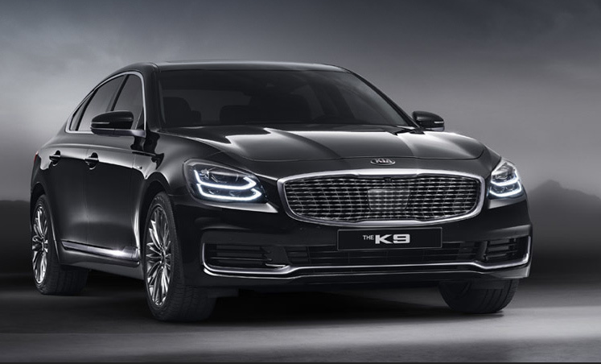
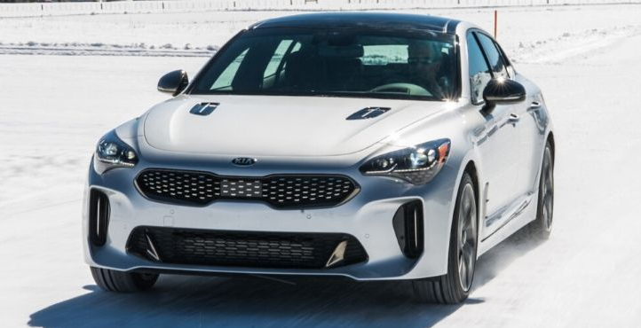

Двигатель Kia K9 демонстрирует надежность, экономичность и потрясающую динамику. Мотор 3.3 Lambda GDI легко
адаптируется к дорожной ситуации и характеру вашего вождения. Пусть каждая поездка вдохновляет вас.
Дизайн Kia K9 создан с решимостью сделать шаг вперед. Масштабность и величественность чувствуются в каждой
детали автомобиля, вплоть до задних фонарей, бампера и линии багажника — все призвано вдохновлять красотой.
Задние фонари соединены единой полосой, которая подчеркивает линию кузова. В этом проявляется мощный характер
Kia K9.
Салон Kia K9 поможет вам избавиться от вчерашней усталости и начать день с новым вдохновением. Эргономичные
удобные сиденья, роскошный интерьер, инновационный интерфейс с функцией распознавания рукописного ввода
обеспечат исключительный опыт, который заинтригует и вдохновит вас.
Отправьтесь к месту назначения, используя возможности дополненной реальности. Технологические решения Kia K9,
призванные обеспечивать максимальный комфорт, впечатлят вас. Интерьер автомобиля подарит вам релаксацию и
вдохновение.
С помощью сервисов Kia Connect* мы позаботились, чтобы у вас было больше свободного времени. Приложение и
бортовые сервисы позволяют вам дистанционно активировать различные функции автомобиля и получать актуальную
информацию о его состоянии в любое время.

Kia Stinger создан как воплощение страсти к вождению, которая живет в сердце любого ценителя автомобилей.
Откройте для себя новую эру мощности и стиля, управляемости и динамики, а также незабываемых ощущений в лице Kia
Stinger!
Классические пропорции соседствуют с новейшими разработками в области аэродинамики и шумопоглощения, в то время
как облик автомобиля обеспечивает минимальное сопротивление и максимальную управляемость.
Чистый и утонченный дизайн интерьера Kia Stinger черпает вдохновение в традициях стиля GT в сочетании с
новейшими технологиями. Круглые диффузоры вентиляционной системы, шкалы приборов с металлическими кольцами и
элементы отделки из матового хрома придают салону авиационные нотки.
Когда вы увлечены дорогой, Kia Stinger помогает вам сосредоточиться на вождении. Продуманные и интуитивно
понятные высокотехнологичные решения всегда под рукой и удобны в использовании.
Будьте всегда на связи с вашим автомобилем при помощи сервисов Kia Connect. Приложение и бортовые сервисы
позволят вам дистанционно активировать различные функции автомобиля и получать актуальную информацию о его
состоянии в любое время.